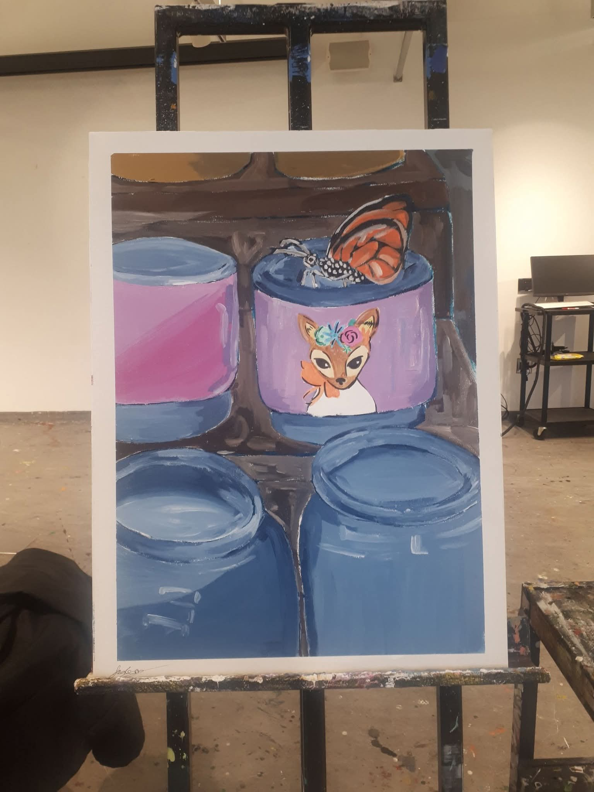

All About me!
My name is Jade, I am a 20 year old student studying Visual Arts at Brock University!
In my dicipline I am learning about different mediums and techniques to create art, and I am loving it! I have been drawing since I was a child, and I have always had a passion for art. I am excited to see where my studies will take me in the future! I am looking to graduate this degree and pursue teachers college to become an art teacher! I have always wanted to be a teacher, and I think it would be a great way to share my love of art with others. I am also interested in learning about different cultures and how they express themselves through art. I am excited to see what the future holds for me in the world of art!!
